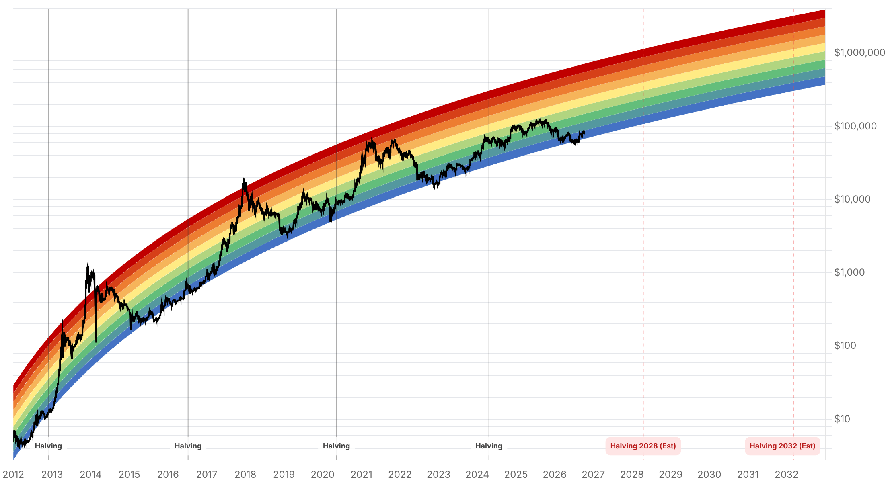

Reporte financiero
BTC cotiza en USD 85.331,15 en vivo (07:22 UTC), un -0,49% frente al cierre de ayer (USD 85.750,58), tras un cuarto intento fallido de romper la resistencia de USD 87.000 desde el 21 de septiembre -el precio llegó a tocar esa zona en la sesión asiática del lunes y se retiró hacia USD 85.800-86.000-. La novedad más relevante desde el reporte de ayer es que los flujos de ETFs de BTC se dieron vuelta: el 5 de octubre hubo una salida neta de USD 89,8M, la primera jornada negativa tras tres semanas consecutivas de entradas positivas reportadas ayer. El detalle por fondo muestra una dispersión marcada: IBIT (BlackRock) sumó +USD 69,9M en entradas, mientras ARKB (-USD 85,2M) y FBTC (-USD 74,5M) protagonizaron las salidas -el patrón sugiere rotación entre fondos más que una huida generalizada-. En derivados, se liquidaron USD 172,45M en las últimas 24 horas (USD 101,3M en largos vs. USD 71,1M en cortos), pero la dinámica se invirtió en las últimas 12 horas, con cortos liquidados por USD 31,87M superando a los largos (USD 21,02M) -es decir, la caída del lunes liquidó largos primero y la posterior recuperación hacia USD 86.000 empezó a exprimir a los cortos, justo en la zona del cluster que Glassnode identificó el 4 de octubre cerca de USD 90.000-. Glassnode matizó hoy esa lectura: "this behavior reflects a moderation of aggressive bullish momentum, without signaling an immediate trend reversal", mientras que el analista técnico Rekt Capital resume el rango vigente como "Bitcoin remains stuck between key support at $82,500 and resistance near $86,700". El retroceso de hoy hacia USD 85.331 es, en los términos que planteó ayer Vikram Subburaj (Giottus), precisamente el tipo de corrección que pondrá a prueba si la naciente alineación ascendente de las medias de 50/100/200 días se sostiene -no hay, por ahora, una fuente fechada que confirme si esa alineación ya se completó o sigue en formación-. El Fear & Greed Index subió de 70 a 73, extendiendo el salto de ayer y marcando dos subas diarias consecutivas a pesar del rechazo en precio -una divergencia a vigilar-. El catalizador de corto plazo más próximo son las minutas de la reunión de la Fed del 16-17 de septiembre, que se publican mañana 7 de octubre; las probabilidades de la Fed no muestran cambios frente a ayer (~83% mantener tasas el 28 de octubre, ~17% subir). Sin novedades verificables hoy en el frente regulatorio (demanda contra la OCC, sanciones a la red A7, escrutinio del Senado sobre Tether) respecto a lo ya reportado ayer.
Tras la cifra semanal positiva de USD 241M reportada ayer (tercera semana consecutiva en positivo), los datos diarios confirmados hoy para el 5 de octubre muestran una salida neta de USD 89,8M en ETFs spot de BTC -la primera jornada negativa de esa racha-. El detalle por fondo es dispar: IBIT (BlackRock) registró +USD 69,9M en entradas, mientras que ARKB (-USD 85,2M) y FBTC (-USD 74,5M) tuvieron las salidas más grandes. Los activos totales en ETFs spot de BTC rondan ahora los USD 111.000M. El patrón -un fondo grande entrando mientras otros dos salen- se lee más como rotación entre vehículos que como una señal de salida generalizada de institucionales.
BTC cerró la semana pasada en USD 86.532 -su mejor cierre semanal desde fines de enero- y se acercó a USD 87.000 en la sesión asiática del lunes 5 de octubre, pero volvió a retroceder hacia USD 85.800-86.000. Es el cuarto intento fallido de quebrar esa zona desde el 21 de septiembre. Los niveles técnicos que enmarcan el rango son: USD 87.570 (apertura 2026), USD 87.363 (máximo de fines de septiembre) y USD 86.700 (resistencia inmediata) por arriba; USD 82.500 (soporte de consolidación) y USD 79.500 (zona de convergencia de medias móviles) por debajo.
En las últimas 24 horas se liquidaron USD 172,45M en el mercado cripto (USD 101,3M en posiciones largas vs. USD 71,1M en cortas; de eso, USD 53,03M corresponden solo a BTC). Pero la ventana de las últimas 12 horas muestra el patrón invertido -cortos liquidados por USD 31,87M superando a los largos (USD 21,02M)-, lo que sugiere que la baja del lunes liquidó largos primero y que la recuperación posterior hacia USD 86.000 comenzó a exprimir cortos, justo en la antesala del cluster de posiciones cortas que Glassnode ubicó el 4 de octubre cerca de USD 90.000. Glassnode matizó hoy la lectura: el comportamiento refleja una moderación del momentum alcista agresivo, sin señalar todavía una reversión de tendencia.
El analista Rekt Capital resume el momento técnico como un rango acotado: "Bitcoin remains stuck between key support at $82,500 and resistance near $86,700". El retroceso de hoy hacia USD 85.331 cae dentro de ese rango y es, en los términos que planteó ayer Subburaj (Giottus), el tipo de corrección que permitirá ver si BTC sostiene su media de 50 días -la prueba real de si la alineación ascendente de 50/100/200 días (no vista desde junio de 2025) se mantiene-. No se encontró una fuente fechada hoy que confirme si esa alineación específica ya se completó; se sigue tratando como una señal en formación, no confirmada.
Las minutas de la reunión del FOMC del 16-17 de septiembre se publican mañana, 7 de octubre, y el mercado las observa como el próximo catalizador de corto plazo, en un contexto de mercado de bonos inestable (rendimientos del Tesoro a 10 años cerca de máximos de dos años) que, según analistas de Deutsche Bank, hace particularmente relevante cualquier señal de comunicación de la Fed. Las probabilidades de mercado no cambiaron frente a ayer: ~83% de mantener tasas el 28 de octubre, ~17% de subir; ~71% de subir en la reunión del 9 de diciembre, ~27% de mantener.
| Periodo | Valor |
|---|---|
| 30 sep | 83553.85 |
| 1 oct | 84853.1 |
| 2 oct | 84497.21 |
| 3 oct | 84763.58 |
| 4 oct | 86480.3 |
| 5 oct | 85786.59 |
| 6 oct (en vivo) | 85331.15 |
| Periodo | Valor |
|---|---|
| Fear & Greed | 73 |

“Bitcoin remains stuck between key support at $82,500 and resistance near $86,700.”
“This behavior reflects a moderation of aggressive bullish momentum, without signaling an immediate trend reversal.”
El catalizador inmediato son las minutas de la Fed del 16-17 de septiembre, que se publican mañana 7 de octubre, en un contexto de rendimientos del Tesoro a 10 años cerca de máximos de dos años que Deutsche Bank señala como relevante para cualquier señal de política monetaria. Con el precio retrocediendo a USD 85.331 tras el cuarto rechazo en USD 87.000, el rango a vigilar sigue siendo el que describe Rekt Capital (USD 82.500-86.700); una ruptura sostenida por encima de USD 87.000-87.570 (apertura 2026) reabriría el camino hacia el cluster de cortos de USD 90.000 que identificó Glassnode, mientras que perder USD 82.500 expondría los clusters menores de USD 83.000/75.000 ya reportados.
La reversión de los flujos de ETF el 5 de octubre (-USD 89,8M, primera salida tras tres semanas de entradas) es el dato nuevo de mediano plazo más relevante -aunque la dispersión por fondo (IBIT en entrada, ARKB y FBTC en salida) sugiere rotación más que fuga generalizada-. La pregunta planteada ayer por Subburaj (Giottus) sigue abierta: si la alineación ascendente de las medias de 50/100/200 días se sostiene durante una corrección como la de hoy. Sin cambios en las probabilidades de la Fed frente a ayer (~83% mantener en octubre, ~71% subir en diciembre); el CPI de septiembre (14 de octubre) y las minutas de mañana son las próximas fechas de riesgo.
Sin cambios en los objetivos de precio de largo plazo ya reportados en ediciones anteriores (Citigroup USD 113.000, Bernstein, Standard Chartered, Tom Lee, NYDIG, Armstrong) ni en el trasfondo regulatorio (demanda de la ICBA contra la OCC, sanciones a la red A7, escrutinio del Senado sobre Tether) reportado ayer -no se encontró desarrollo nuevo y verificable en ese frente hoy.
Cuatro intentos fallidos de romper USD 87.000 desde el 21 de septiembre, combinados con la reversión de ETF del 5 de octubre, elevan el valor de esperar confirmación direccional (ruptura sostenida con volumen, no solo un wick) antes de aumentar exposición en cualquier sentido.
Con rendimientos del Tesoro a 10 años cerca de máximos de dos años, Deutsche Bank advierte que la comunicación de la Fed es particularmente sensible en este contexto. Un tono más hawkish de lo esperado podría presionar el rango inferior (USD 82.500); uno dovish podría ser el gatillo para probar USD 87.000-90.000 de nuevo.
El índice de sentimiento subió dos días consecutivos mientras el precio retrocedía tras un cuarto rechazo -podría anticipar que el apetito por riesgo sostiene una nueva prueba de la resistencia, o ser simplemente ruido de corto plazo. Monitorear junto con los flujos de ETF y el open interest de derivados antes de operar sobre esta divergencia específicamente.